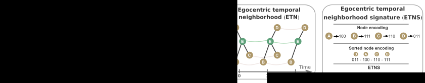
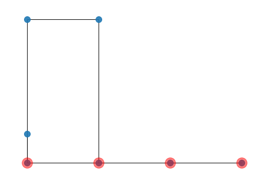

In the following we explain in detains how Egocentric Temporal Motifs Miner works.
The code can be found here.
A decade ago, Milo et al.[1] had introduced the notion of network motifs for static graphs, that were mainly used in biology and later researchers started to use this concept in other disciplines such as applications to temporal graphs. Temporal graphs are indispensable in modelling social interactions, being a standard graph not able to capture the related temporal dynamics. The idea of our Egocentric Temporal Motifs Miner is to jump inside the network and follow the path of a specific node, finding node-dependent spatio-temporal patterns.
In this blog post we further extend the concept of temporal motifs going beyond the traditional point of view. The standard approach is indeed based on observing temporal networks from the outside and decomposing them in their small components. In particular, for each node we observe its neighbors and how its connections to them change in a given period of time. We neglect the connections among neighbors of the chosen ego node, and we only focus on studying how the set of neighbors evolves in time, following an ego perspective. In social settings this allows to identify the patterns of interactions of individuals, selecting the most relevant behaviors as those which are most repeated in time by the same or different persons. We give to these ones the name of egocentric temporal motifs (ETM). The ego perspective allows to address the motif identification procedure very efficiently by comparing egocentric temporal sub-networks in terms of their signature, simply consisting of a bit vector. This represents a huge simplification with respect to mining standard motifs, which necessarily requires to address the graph isomorphism problem, which slows down the procedure and makes it hard to identify graph motifs with more than a handful of nodes
 Fig 1. The left panel shows the input temporal graph. Labels on edges represent the time in which the interaction happens. Given a temporal gap, the input temporal graph is split in an ordered sequence of static graphs, shown in the middle left panel. The middle right panel shows Egocentric Temporal Motifs with ego node E, and k equal to 2. As you can see, only first-order interactions are considered. The green node represents the ego and the brown nodes represent neighbours of the ego. Black edges connect the ego with its neighbours in a given temporal layer, while green and brown edges connect the same node in different temporal layers. Finally, the right panel show how the egocentric temporal neighbourhood signature (ETNS) is computed. First, each non-ego node is embedded in a bit vector of length k+1, the i-th value of the vector is 1 if the node is connected to the ego at the i-th layer. Finally, node encodings are sorted and concatenated, producing the Egocentric Temporal Neighborhood Signature.
You can download the code from the official git repository
In the repository, you will find four python files:
construction.py It is used to build the input graph! It takes in input a file containgin time, source node and targhet node one per line, like the one below:
distances.py It is used compute distances among grpahs. In particular, you can compute distances between two different temporal graphs using etmm base distance,NetSimile distances, a modified version of NetSimile and Weighted Laplacian. All details are explainde in the paper [2]
ETN.py This calss allow you to count ETN in a given input temporal graph, you can also save ETNS counts, load ETNS counts and plot the graph associated to an ETNS.
Now we can count the number of ETN in our graphs, by simpy:
as you can see, each key of the dictionary S is an ETNS and the value is the number of occurencies of ETNS in the temporal graph.
We can now save and load ETNS as follow:
We can convert an ETNS into a Networkx graph and the we can draw it, with the following code:
obtaining

ETMM.py It is used to count ETNS from a a list of Temporal Graphs (used as null models). For instance suppose, you have a list of null models (you can see an example of null models generation here) then you can count a give set of ETNS in the null models, like follow:
the counts is a dictionary of the following format:
in witch the key is ETNS given in input by S, while the value is an array of occurencies in the original and in the null models.
For instance, the ETNS '0b1100' appeirs 501 times in the original temporal network, and 75, 85, 89, ... times in the first, second, third,..null model, respectivelly.
Finally, we can apply a statistical test to filter those that are statistically significant
[1]R. Milo, S. Shen-Orr, S. Itzkovitz, N. Kashtan, D. Chklovskii, and U. Alon. Network motifs: simple building blocks of complex networks. Science, 298 (5594):824–827, 2002.
[2]Longa, Antonio, et al. "An Efficient Procedure for Mining Egocentric Temporal Motifs.".(2021)